UDN
Search public documentation:
DevelopmentKitGemsHUDDistortion
日本語訳
中国翻译
한국어
Interested in the Unreal Engine?
Visit the Unreal Technology site.
Looking for jobs and company info?
Check out the Epic games site.
Questions about support via UDN?
Contact the UDN Staff
中国翻译
한국어
Interested in the Unreal Engine?
Visit the Unreal Technology site.
Looking for jobs and company info?
Check out the Epic games site.
Questions about support via UDN?
Contact the UDN Staff
UE3 Home > Unreal Development Kit Gems > Adding HUD Distortion
UE3 Home > Post Process Effects > Adding HUD Distortion
UE3 Home > Materials & Textures > Adding HUD Distortion
UE3 Home > Post Process Effects > Adding HUD Distortion
UE3 Home > Materials & Textures > Adding HUD Distortion
Adding HUD Distortion
Last tested against UDK June, 2011
PC compatible
Overview
Adding distortion to the screen is often a really handy effect for providing feedback to the player. It may mean the player has been hit by a certain kind of weapon, is currently under water or viewing through a sniper scope. In this development kit gem the sniper scope will be used as the example.
Post Processing
Unreal Engine 3 stores its screen output in a render target which allows you to modify it using post processing. As it is stored in a render target, the Material system is used to modify the render target. Please refer to Post Process Effects, more specifically Post Process Materials.
Setting up the material
Textures
To start off, some textures are needed. Textures are stored in the UI LOD Group and have the Address X and Address Y set to Clamp. A normal map for distortion. 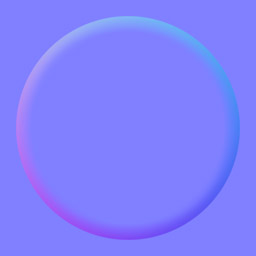 An alpha map for opacity. 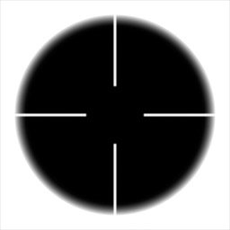Sniper scope texture coordinates
For a sniper scope, it isn't desirable to have the texture stretched out over the entire screen. Ideally, you would want the sniper scope to be in the middle of the screen and constrained to a 1:1 aspect ratio. This can be achieved in the material by adjusting the texture coordinates. 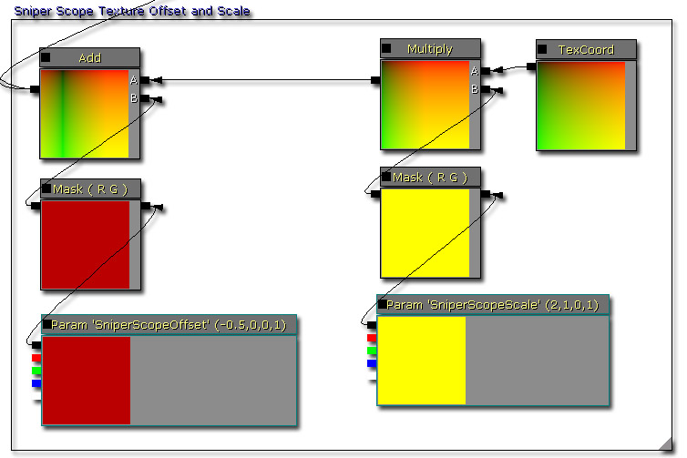- Multiplying texture coordinates adjusts the scale of the texture as a percentage. For example, 0.5 is 50% of the texture and 2.0 is 200% of the texture.
- Adding to the texture coordinates adjusts the position of the texture as a percentage. This isn't the same as the position of the texture on the screen, but rather where to start looking within the texture when first using the texture. Normally this would just be 0, but adjusting this allows you to pan across the texture to select a different pixel to start drawing at. In our case, since the texture has its Address X and Address Y clamped, it will shift the texture across the screen and produce black parts on the edges which is ideal for a sniper scope.
Sniper scope distortion
For a sense of 'immersion' producing a small amount of distortion to hint at the curvature of the sniper scope's lens is desirable. The way to do this is to adjust the texture look up coordinates on the Scene Texture Sample. By multiplying the normal map, it is also possible to adjust the strength of the distortion as well. 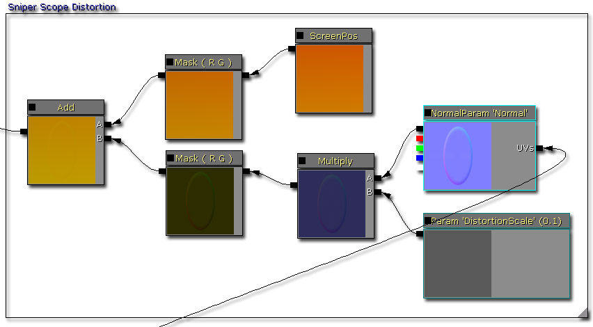- Multiplying the normal map with a scalar parameter allows you to adjust the strength of the distortion easily.
Sniper scope colorizing
With the texture offset and the distortion complete, it is time to bring everything together. By linear interpolating between two versions of the Scene Texture Sample, using the opacity map, it is easy to create the sniper scope pattern on the screen. 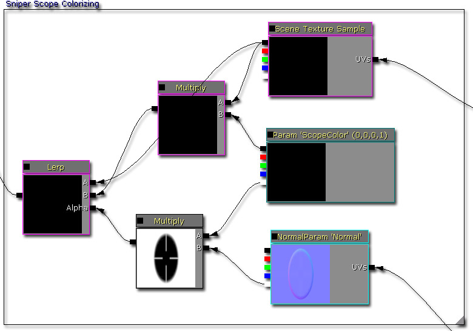- Change the color of the sniper scope overlay by adjusting ScopeColor's RGB values.
- Change the strength of the sniper scope overlay by adjusting ScopeColor's alpha value.
Completed material
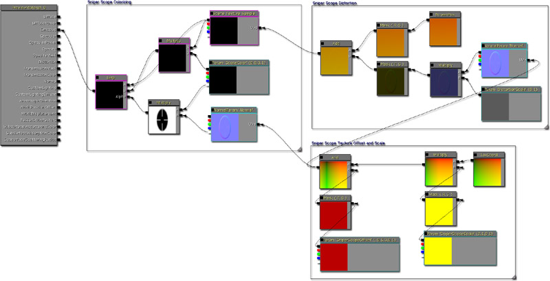Creating a simple Post Process Chain
Post process chains is what Unreal Engine 3 uses to handle post processing effects. Using a node like tree to chain effects one after the other, allows designers to create new post processing effects by combining other post processing effect modules easily. For more information on this system please refer to Post Process Editor User Guide and Post Process Effect Reference. 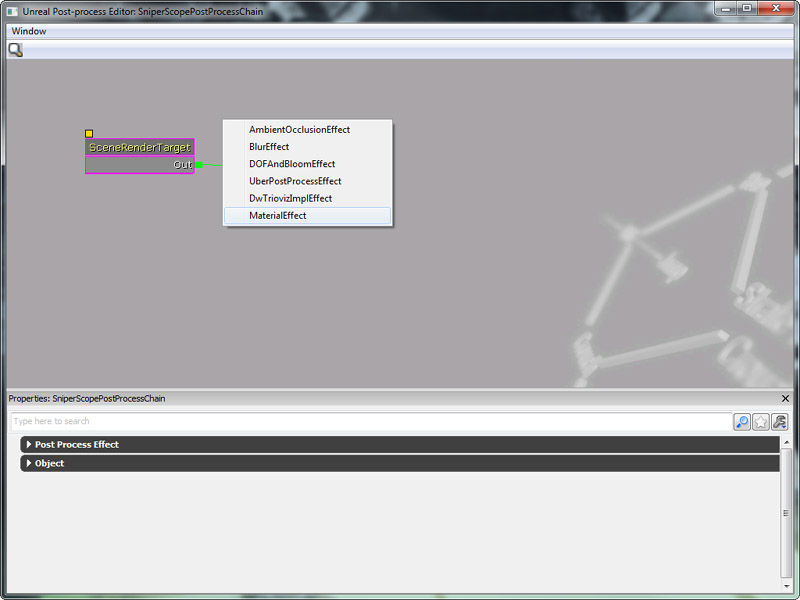 To test this material effect, create a new Post Process Chain by left clicking the New button within the Content Browser. 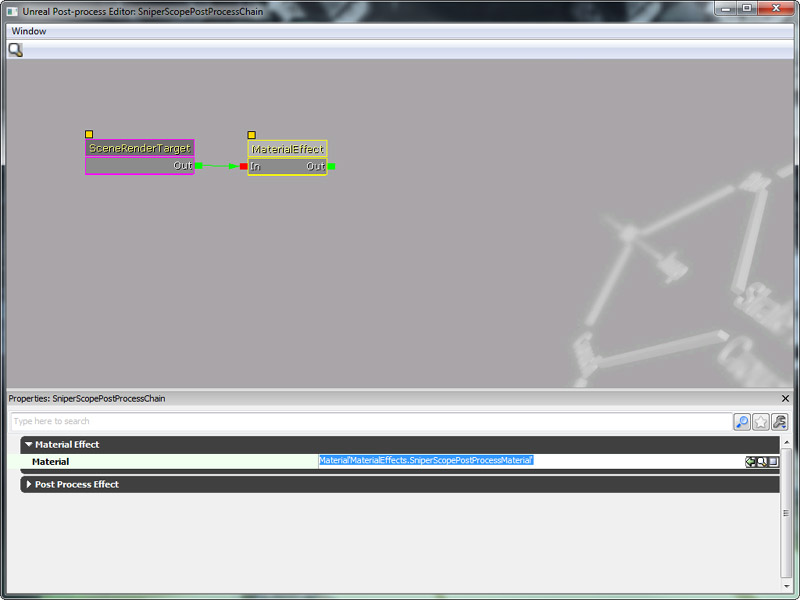 Once the post process chain has been created, double click on its icon with the Content Browser to open the Post Process Editor. Right click within the empty space, and select Material Effect from the context menu that appears. This will create a new Material Effect post process node. 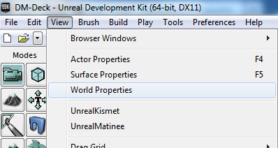 Select on the Material Effect post process node, and set the Material field to the Sniper Scope material created above. 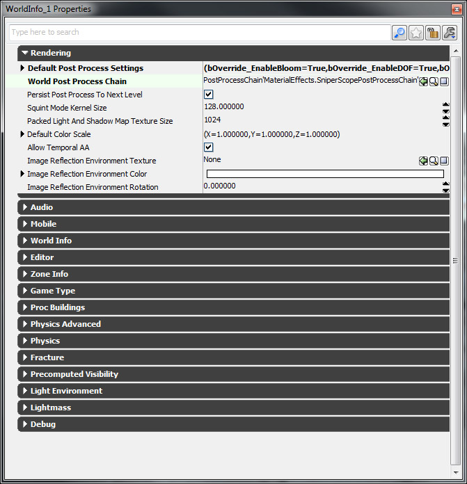
Modifying the material parameters in Unrealscript
As stated in the material creation section of this development kit gem, there are some variables that you need to adjust. To be able to find and reference the Material Effect node within the post process chain you will need to give the Material Effect node a name. This is done within the Post Process Editor like so: 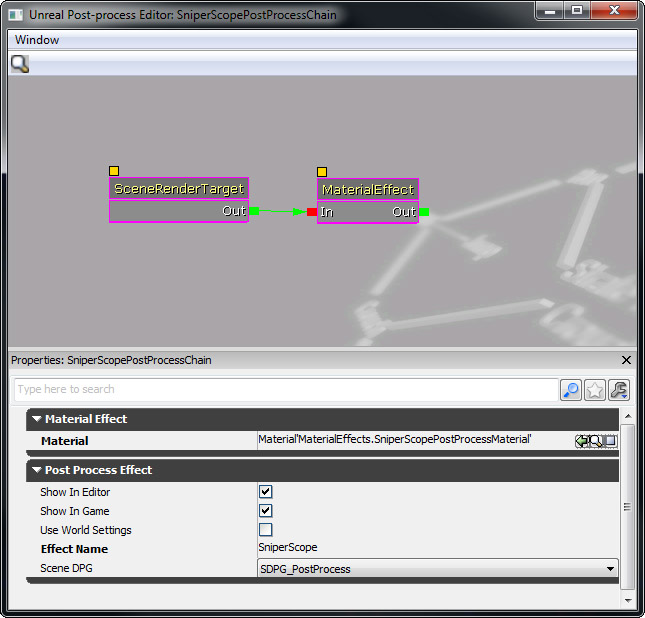
var MaterialInstanceConstant SniperPostProcessMaterialInstanceConstant;
function PlayerTick(float DeltaTime)
{
local MaterialEffect SniperPostProcessEffect;
local LocalPlayer LocalPlayer;
local LinearColor LC;
Super.PlayerTick(DeltaTime);
if (SniperPostProcessMaterialInstanceConstant == None)
{
Super.PlayerTick(DeltaTime);
// Get the local player, which stores the post process chain
LocalPlayer = LocalPlayer(Player);
if (LocalPlayer != None && LocalPlayer.PlayerPostProcess != None)
{
// Get the post process chain material effect
SniperPostProcessEffect = MaterialEffect(LocalPlayer.PlayerPostProcess.FindPostProcessEffect('SniperScope'));
if (SniperPostProcessEffect != None)
{
// Create a new material instance constant
SniperPostProcessMaterialInstanceConstant = new () class'MaterialInstanceConstant';
if (SniperPostProcessMaterialInstanceConstant != None)
{
// Assign the parent of the material instance constant to the one stored in the material effect
SniperPostProcessMaterialInstanceConstant.SetParent(SniperPostProcessEffect.Material);
// Set the material effect to use the newly created material instance constant
SniperPostProcessEffect.Material = SniperPostProcessMaterialInstanceConstant;
// Adjust the scope color
LC.R = 1.f;
LC.G = 0.f;
LC.B = 0.f;
LC.A = 1.f;
SniperPostProcessMaterialInstanceConstant.SetVectorParameterValue('ScopeColor', LC);
}
}
}
}
}
Downloads
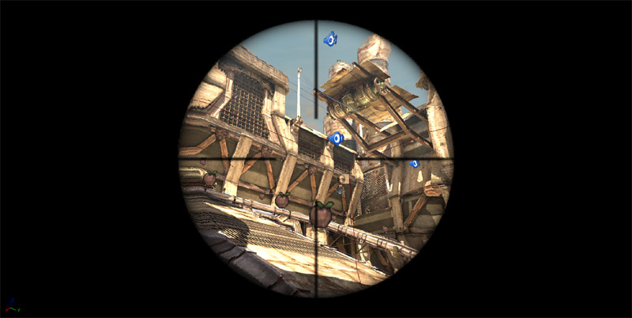
- Download the content used in this development kit gem.

{kind=link}